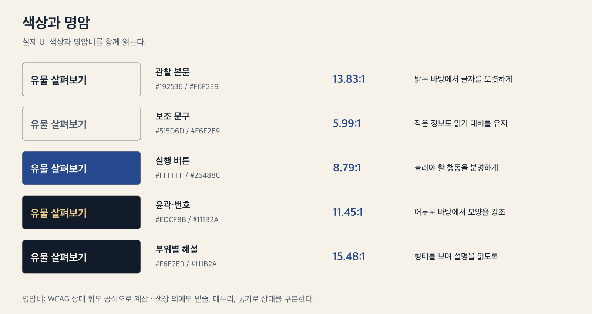

청동의 울림 UI/UX 설계
저시력 사용자가 유물을 가까이 관찰하고, 모양을 따라 각 부분의 설명을 들을 수 있도록 설계한 디지털 유물 경험이다. 소리의 리듬은 시각 패턴과 진동으로 함께 전달한다. 실제 화면을 바탕으로 배치, 색상, 글자와 감각 안내의 선택 이유를 정리한다.
1. UI 배치도
유물은 화면 중앙에 크게 두고, 반복해서 사용하는 조작은 하단에 모은다. 손을 크게 옮기지 않고 관찰과 선택을 이어가도록 구성한다.

- 중앙 유물 배치
- 유물 주변의 문구와 장식을 줄여 형태에 시선이 머물게 한다. 가로 드래그로 돌려보는 공간을 메뉴와 분리해, 관찰 중 다른 기능을 잘못 누르는 일을 줄이고자 한다.
- 하단 조작 배치
- 터치와 드래그를 반복하는 모바일 사용 흐름에서 엄지가 닿기 쉬운 하단에 주요 행동을 둔다. 긴 ‘유물 살펴보기’ 버튼 아래에 종류 선택을 나란히 배치해, 같은 위치에서 다음 행동을 찾게 한다. 참고 사례의 하단 엄지 영역과 일관된 조작 순서를 적용한 구성이다. [1]
- 보조 기능과 해설 화면
- 전체화면과 출처는 우측 상단 아이콘으로 구분한다. ‘유물 살펴보기’에서는 현재 유물과 부위별 설명에 집중하도록 종류 선택을 숨기고, 하단에는 ‘돌아가기’를 둔다.
2. 색상과 명암
아이보리와 네이비를 바탕으로 청동 유물의 색감을 살리고, 짙은 파랑과 골드로 조작과 윤곽을 구분한다. 유물의 표면색은 유지하면서 글자·번호·버튼의 밝기 차이를 크게 잡는다.

- 밝은 관찰 화면
- 따뜻한 아이보리 바탕은 청동 표면의 어두운 색과 형태를 드러낸다. 본문은 먹색, 보조 문구는 짙은 회색을 사용해 정보의 위계를 나누면서 읽기 대비를 유지한다.
- 어두운 해설 화면
- 네이비 바탕은 유물 밖의 시각적 자극을 줄이고, 밝은 골드 윤곽은 외곽과 구멍의 경계를 드러낸다. 설명 글자는 밝은 아이보리로 표시해 형태와 해설을 함께 읽게 한다.
- 선택과 조작의 구분
- 파랑은 실행과 포커스, 골드는 모양과 설명 지점을 나타낸다. 선택 상태에는 밑줄·굵기·테두리를 함께 사용해 색만으로 의미를 구별하지 않도록 한다. [1]
| 용도 | 글자·선 / 배경 | 명암비 |
|---|---|---|
| 관찰 본문 | #192536 / #F6F2E9 | 13.83:1 |
| 보조 문구 | #515D6D / #F6F2E9 | 5.99:1 |
| 실행 버튼 | #FFFFFF / #26488C | 8.79:1 |
| 윤곽·번호 | #EDCF8B / #111B2A | 11.45:1 |
| 부위별 해설 | #F6F2E9 / #111B2A | 15.48:1 |
WCAG의 일반 글자 4.5:1, UI 경계 3:1 기준을 참고해 색상 쌍의 명암비를 계산했다. [3] [4] 전체 색상표 · 상세 명암비 표


3. 글꼴과 간격
익숙한 고딕체와 큰 해설
한글 시스템 고딕을 사용해 익숙한 글자 형태로 읽게 한다. Apple SD Gothic Neo, Noto Sans KR, 맑은 고딕, 시스템 산세리프 순으로 적용한다. 얇은 장식체보다 글자 획과 낱자의 구분이 분명한 구성을 선택했다.
자주 누르는 메뉴는 16px, 부위별 해설은 22px로 두어 읽는 내용에 더 큰 크기를 배정한다. ‘돌아가기’와 출처 본문은 20px다. 해설의 줄높이는 1.65, 출처는 1.7로 설정해 다음 줄을 찾기 쉽도록 한다. 글자 크기와 간격이 식별성과 읽기 흐름에 영향을 준다는 저시력 요구사항을 반영했다. [2]
간격과 누르기 영역
유물 살펴보기 버튼은 높이 52px, 돌아가기는 56px로 넓게 구성한다. 상단 아이콘은 44×44px이며 중심 간 거리는 56px다. 하단 유물 선택은 4px 간격으로 구분하고, 긴 이름은 의미 단위로 줄바꿈한다.
필요한 순간의 짧은 설명
지속적인 도움말 대신 버튼 이름으로 행동을 전달하고, 부위를 선택했을 때 이름과 짧은 해설을 제공한다. 읽어야 할 양을 줄여 유물과 현재 설명 사이를 쉽게 오가도록 한다. 출처는 별도 팝업에 모아 관찰 화면을 간결하게 유지한다. [1]

4. 유물 관찰과 해설
가까이 보는 관찰
조준동 교수가 공동저자로 참여한 이양희 외(2019)의 「시각장애인의 전시예술품 관람 욕구조사」는 83명의 응답을 분석했다. 연구에서는 작품 가까이에 눈을 대고 감상하는 방식을 선호하며, 절반 이상이 잔존시각을 활용한다고 보고했다. [5]
이 관찰 욕구를 바탕으로 개인 화면에 유물을 크게 제시하고, 전체화면과 좌우 회전으로 원하는 시점에서 살펴보게 한다. 화면 가까이에서 자신의 속도로 형태를 확인하는 경험을 중심에 둔다.


소리의 시각·촉각 표현
휴대폰을 흔들면 방울 소리와 함께 하단의 시각 패턴과 진동이 같은 리듬으로 반응한다. 흔드는 움직임에 따라 달라지는 울림의 발생 시점과 강약을 눈으로 보고 손으로 느끼게 한다. 청각 정보를 시각과 촉각으로 함께 표현해 소리의 흐름을 여러 감각으로 파악하도록 한다.
모양을 알려주는 진동
‘유물 살펴보기’에서는 화면에 보이는 유물 모양에 맞춰 촉각 반응 영역을 만든다. 손가락이 유물 안에 닿으면 진동하고, 외곽이나 구멍 밖으로 벗어나면 멈춘다. 굵은 윤곽선과 진동의 유무를 함께 단서로 삼아, 손을 움직이며 형태와 빈 공간의 경계를 따라가도록 한다.
설명 지점으로 이끄는 안내음
유물 위에서 설명 지점에 가까워질수록 안내음의 간격이 짧아지고 음높이가 올라간다. 지점에 닿으면 도착음과 부위 이름을 들려주고, 손을 떼었다 다시 닿으면 짧은 해설을 제공한다. 가까워지는 소리로 위치를 찾고, 진동으로 형태를 확인하며, 음성과 글로 의미를 이해하는 흐름이다.
형태와 설명의 연결
‘유물 살펴보기’는 보고 있던 시점의 모양을 유지한 채 외곽과 구멍을 굵은 윤곽으로 표시한다. 손으로 모양을 따라가며 전체 구조를 확인하고, 주요 지점에 닿아 해당 부위의 이름과 음성 해설을 들을 수 있다.
각 유물의 2~3개 지점에 설명을 연결해 전체 모양과 부분의 의미를 함께 이해하도록 한다. 실물이 없어도 시점에 따라 달라지는 형상을 살펴보고, 궁금한 부분의 이야기를 선택해 듣는 방식이다.